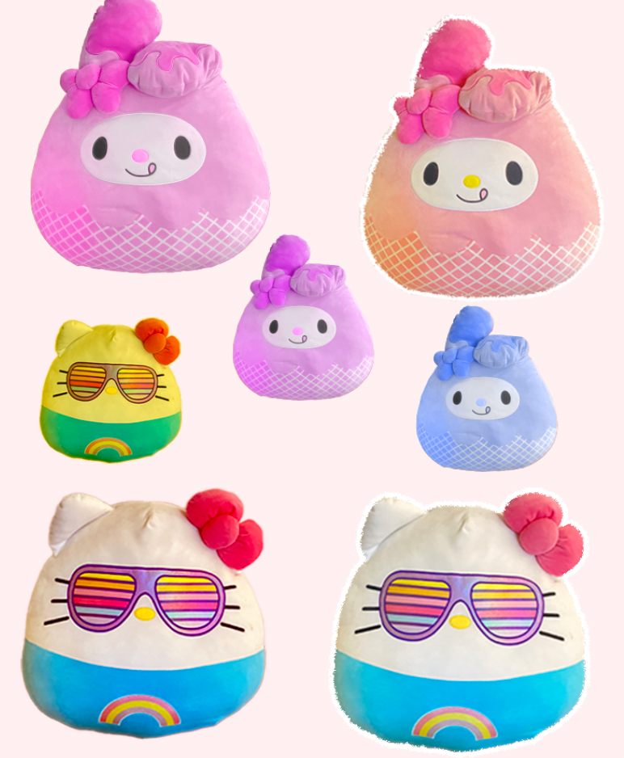

project description
For my final project, I intended to emphasize the game's visual elements. As previously discussed, my emphasis will be on enhancing the characters and refining the color palette to infuse more vitality into the game. I'm currently exploring ways to enhance the characters, employing Photoshop and Illustrator to explore potential options. My experimentation involves using familiar images but applying color overlays to elevate the image quality.

Given my emphasis on color, I found it intriguing to expand on the Sanrio theme. That's why I designed a backdrop in line with the Sanrio theme, featuring an adorable setting that complements the characters. This opportunity enabled me to freely experiment with colors as desired, while also infusing the game with greater vitality and a stronger overall connection. While I do intend to enhance user interactivity, the changes won't be substantial. I aim to incorporate a "Start Game" option accompanied by instructions that appear upon opening the game. I also have additional minor UI/UX elements that I intend to enhance, although they haven't been fully outlined yet!